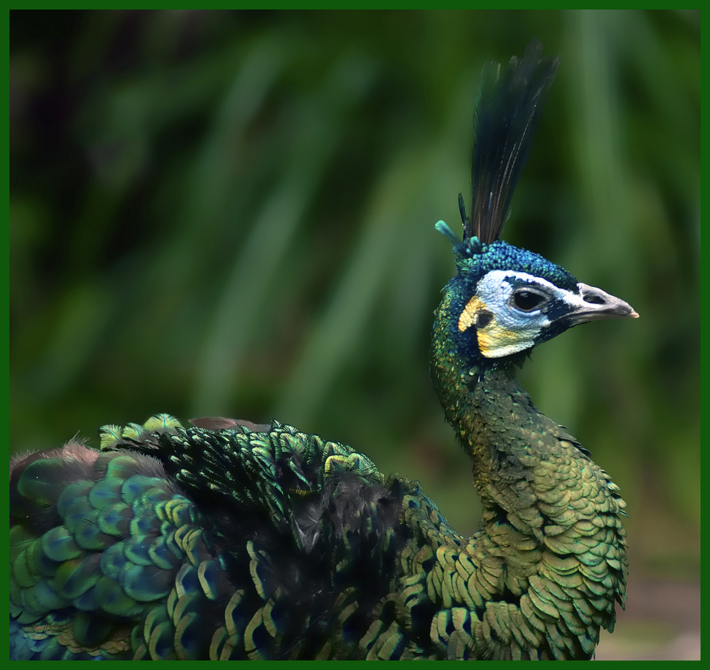

📇
基础名片
Basic Info
绿孔雀
学名：Pavo muticus , 别名：爪哇绿孔雀、鳞羽孔雀
地位：云南旗舰物种，中国唯一本土原生孔雀
保护级别：国家一级重点保护野生动物、极危（CR）
学名：Pavo muticus , 别名：爪哇绿孔雀、鳞羽孔雀
地位：云南旗舰物种，中国唯一本土原生孔雀
保护级别：国家一级重点保护野生动物、极危（CR）
✨
外形特征
Morphology
外形特征
雄鸟：体羽以翠绿色为主，具金属光泽，头顶冠羽呈簇状，颈胸有鳞片状斑纹，尾屏修长华丽
雌鸟：无尾屏，羽色偏暗绿褐，体型较小，羽冠短
整体身形修长，颈部细长，区别于蓝孔雀
雄鸟：体羽以翠绿色为主，具金属光泽，头顶冠羽呈簇状，颈胸有鳞片状斑纹，尾屏修长华丽
雌鸟：无尾屏，羽色偏暗绿褐，体型较小，羽冠短
整体身形修长，颈部细长，区别于蓝孔雀
🌍
分布与栖息
Habitat
分布与栖息
国内仅存于云南元江、红河、澜沧江等河谷
栖息于海拔2000米以下低山、河谷
主要在稀树草地、河岸疏林等地区生活
国内仅存于云南元江、红河、澜沧江等河谷
栖息于海拔2000米以下低山、河谷
主要在稀树草地、河岸疏林等地区生活
🍃
习性与繁殖
habits
习性与繁殖
一夫多妻制，雌性单亲抚育，繁殖期雄性具领域性
食性：主要是植物果实、种子、嫩芽及昆虫
繁殖：繁殖期3–6月，雌鸟每窝产卵4–6枚
一夫多妻制，雌性单亲抚育，繁殖期雄性具领域性
食性：主要是植物果实、种子、嫩芽及昆虫
繁殖：繁殖期3–6月，雌鸟每窝产卵4–6枚
🛡️
保护现状与措施
measure
保护现状与措施
全球野生约15,000 ~ 30,000只（成熟个体），中国占全球约6%，是全球绿孔雀最重要的分布区之一
保护：建立保护区与栖息地修复、人工繁育与野化放归、种群监测
威胁：栖息地破坏、遗传风险、人为干扰
全球野生约15,000 ~ 30,000只（成熟个体），中国占全球约6%，是全球绿孔雀最重要的分布区之一
保护：建立保护区与栖息地修复、人工繁育与野化放归、种群监测
威胁：栖息地破坏、遗传风险、人为干扰

绿孔雀种群数量变化监测
绿孔雀种群数量增长趋势